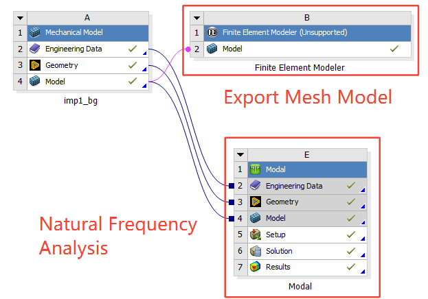
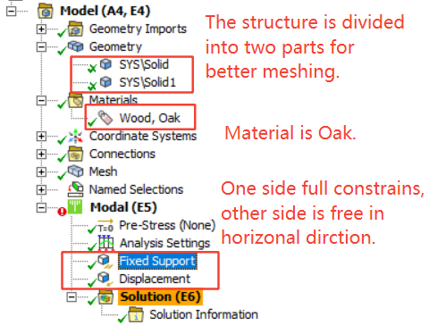
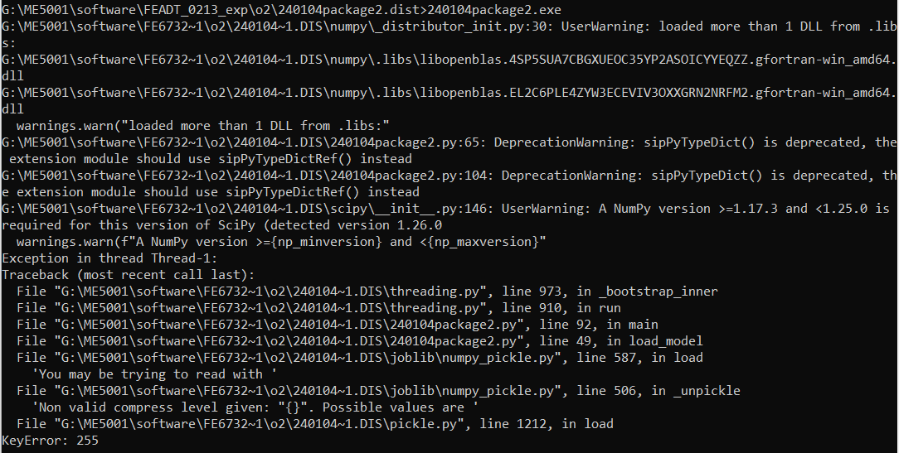
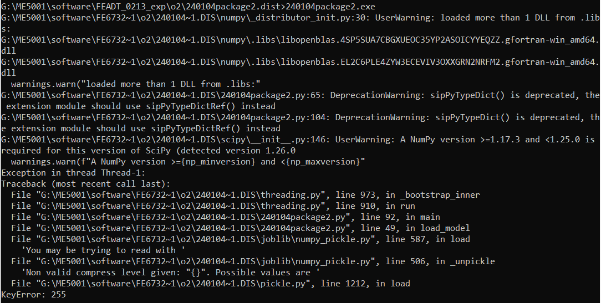

Digital Twin Integrated Finite Element Analysis
Summary
- Real-time bridge Structure Health Monitoring (SHM) using DT integrated FEA.
- Simulate a car going through the bridge which is subjected dynamic loading conditions.
- Map FEA pattern on the physical structure for detail health condition monitoring.
- High-fidelity Reduce Order Model (ROM) based on machine learning for real-time FEA computation.
Keywords: Structure Health Monitoring; Digital Twin; Finite Element Analysis; Reduced Order Model.
Tools/Software
- Python:
- Jupyter Notebook: Reduced-order Model training. It is better for result visualization and parameter modification.
- Pycharm: Back-end Main Script Running. Main script includes: servers/clients communications, ROMs for FEA Comp, Decision-making, Platform setup.
- Solidworks: Structure ModellingZ.
- Ansys:
- Workbench: Structure Modals Analysis and Single Loading Condition visualization. For resonance simulation, it requires to address the structure's natural frequencies. The ROM result should be validated with Workbench's.
- APDL: Database. To achieve high accuracy prediction of dynamics loading conditions, a large volume of data is required for machine learning training. Workbench is time-comsuming for collecting the large database.
- Unity3D: FEA visualization and Platform interface.
- Vuforia: map digital model on real structure.
- Uduino: connect the Arduino directly in Unity3D.
- Arduino: Sensor Network and Equipment Control.
- Arduino Board: WeMos D1 WiFi and Uno. WeMos D1 WiFi has the WiFi modules but only one A port.
- Ultrasonic Sensor HC-SR04+: distance sensor. Not in used now because it is unstable.
- Distance Sensor VL53L1X: distance sensor for car localization.
- Anemometer: wind speed sensor.
- LED: green and Red for traffic light simulation.
- Servo Motor MG996R 180 degree: bridge gate simulation.
- Thin Film Pressure Sensor: pressure sensor for weight measurement.
- Motor Drive 4 Channels: car's actions control.
- 8V Motor: drive the car.
- Raspberry Pi: Send Sensor Data and Recevie Order to Control Car.
Physical Setup
Bridge Modelling
The bridge draw is shown below, and click here for all the structure files. The structure is modeled by Solidworks, and is exported as .x_t and .stl file, while .x_t file can be import to Ansys and .stl file will be used in Unity3D.
Bridge FEA
The Bridge should be analyzed by ANSYS Workbenck ahead and ANSYS 2020 R2 is recommanded as the Finite Element Modeler cannot be found in higher vision. The modules in used are shown below.  Publish ME5001 Proj as .exe File
The only input of my ME5001 project is the IP address, so I used PyQt5 to design a UI to text the IP address and publish the UI as a exe file.
- The project requires torch module.
- The errors from exe file are same as the IDE, so it is hard to debug.
Using nuitka
I have tried package by nuitka, but finally was fail. Here is the nuitka guide and here is the common order.
nuitka --mingw64 --standalone --show-progress --show-memory --enable-plugin=pyqt5 --plugin-enable=torch,numpy --jobs=4 --output-dir=o2 240104package2.py
The some of the packages of python are required to using --plugin-enable, and they are checked
here. The error is:
 This is the method. To summary, copy the numpy from
/Anaconda3/envs/torch1.9/Lib/site-packages/numpy.libs to /o2/240104package2.dist/. Then the GUI can
be shown. But there is still a error from numpy's version. Someone mention should try to change lower version, and
here are the vision of each modules.

However, finally I gave up using the nuitka.
This is the method. To summary, copy the numpy from
/Anaconda3/envs/torch1.9/Lib/site-packages/numpy.libs to /o2/240104package2.dist/. Then the GUI can
be shown. But there is still a error from numpy's version. Someone mention should try to change lower version, and
here are the vision of each modules.

However, finally I gave up using the nuitka.
Using pyinstaller
There is the order and guide vide.
pyinstaller --noconfirm --onedir --console --copy-metadata numpy --copy-metadata importlib_metadata --copy-metadata tqdm --copy-metadata requests --copy-metadata packaging --copy-metadata filelock --add-data "E:/Anaconda3/envs/torch1.9/Library/bin;." 240104package2.py